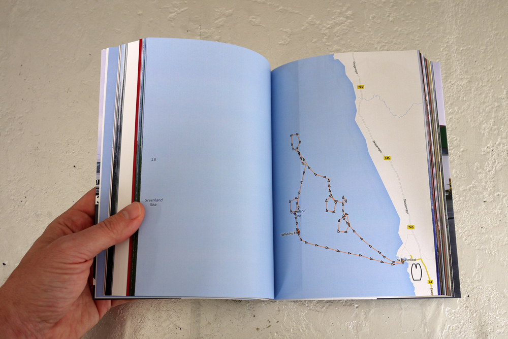
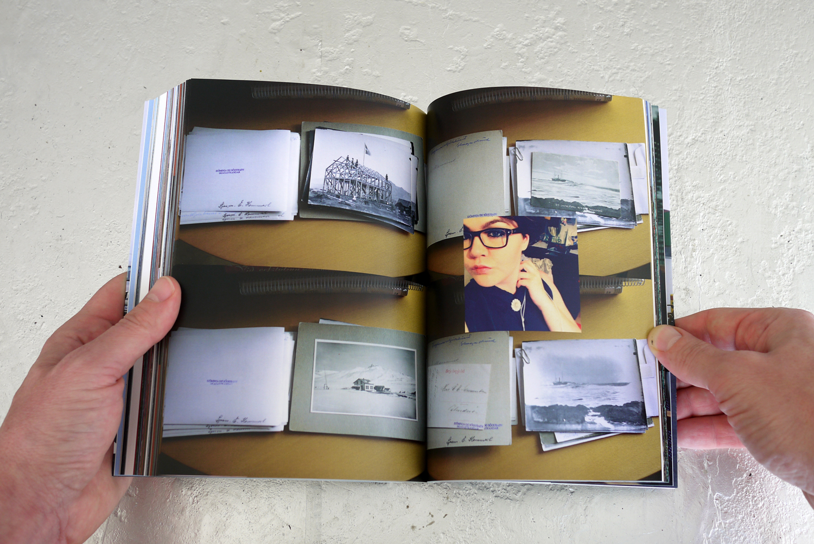
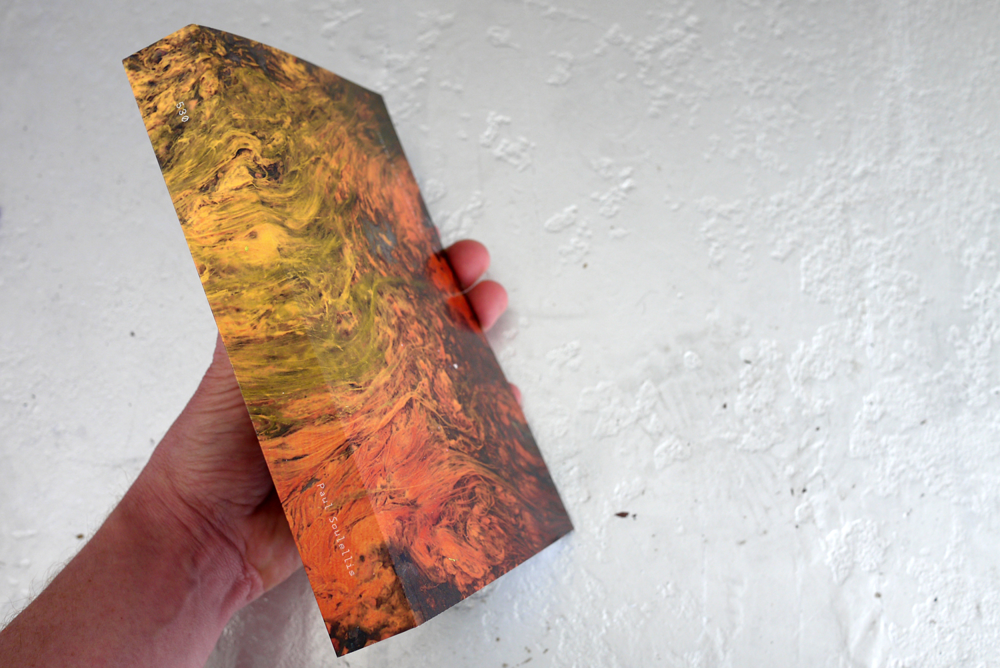
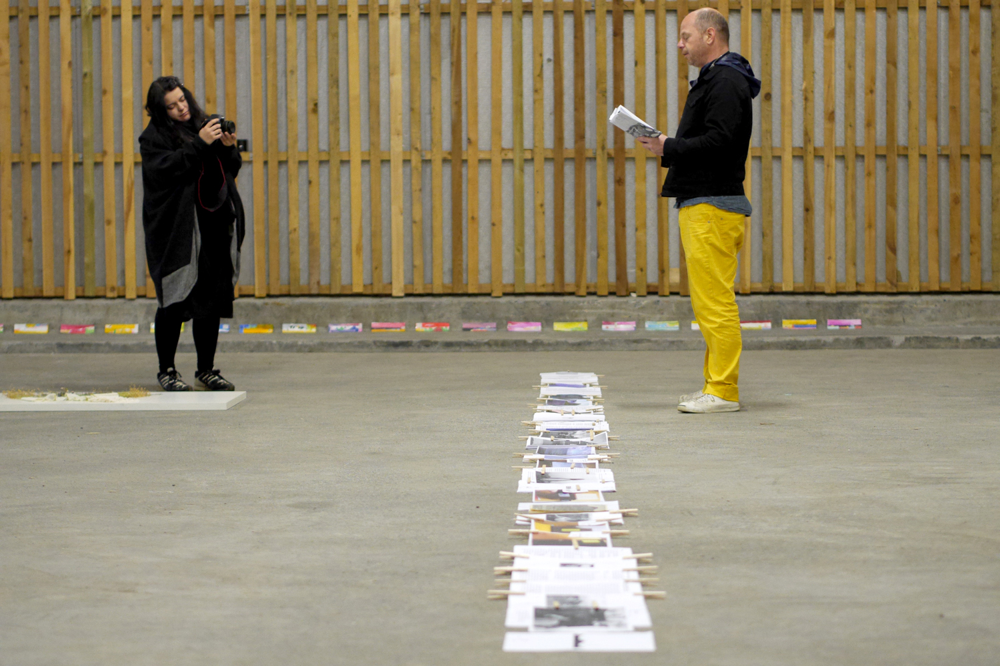

530 (Sá veldur sem á heldur) (2013)

530 (Sá veldur sem á heldur) is a site-specific book work completed at Nes, an artist’s residency in Skagaströnd, Iceland (July–September 2013).
The book expresses a series of connected encounters with people, places, things, stories and data in the remote fishing village. 530 refers to the village’s population (according to Wikipedia), as well as a number that appears on a 1955 fishing trawler docked in Skagaströnd’s harbor (Hafrún). It is also the number of pages in the book.

Sá veldur sem á heldur is an Icelandic expression that a village resident used in conversation to describe the future of the town, in relation to its rich sea resources. It roughly translates to “the one who holds it is the one who is responsible.” I adopted the expression to refer to the book form itself, in the hands of the reader.

The work was created using a score of 39 movements that were arranged by chance operations. The sections move in and out of each other, sometimes overlapping or merging.


530 was printed by Svansprent in Reykjavík, in an edition of 50. Most of the books were given away in a series of book encounters in the town during my final week in residency. I gave it to townspeople portrayed in the work, people who supported the project, and to people encountered by chance in the town’s public spaces during the encounters.

Copies of 530 are in the artists’ books collection at Reykjavík Art Museum, the library of Nylo (Living Art Museum, Reykjavík) and the Skagaströnd Public Library.
